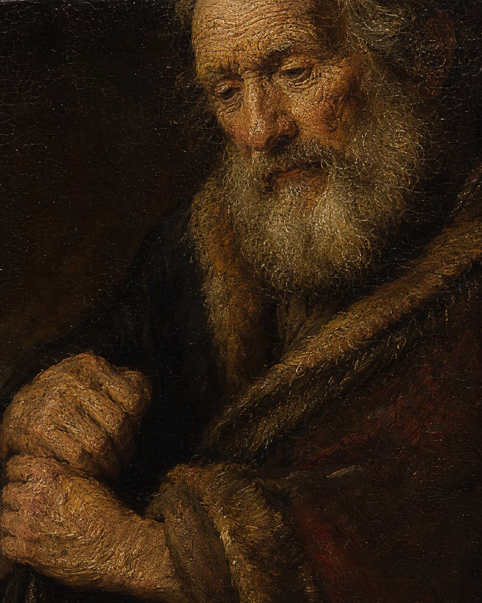
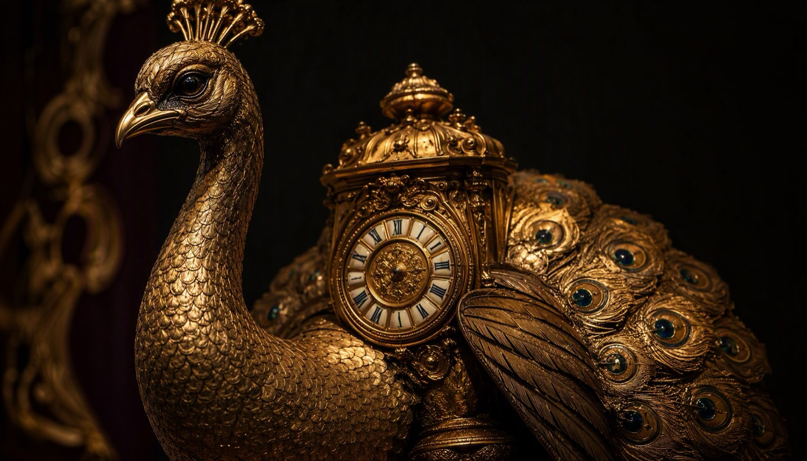
An Editorial Atlas of Collections · Issue No. I
State Hermitage Museum
Three million objects. Two hundred and sixty years.
One winter palace on the Neva.
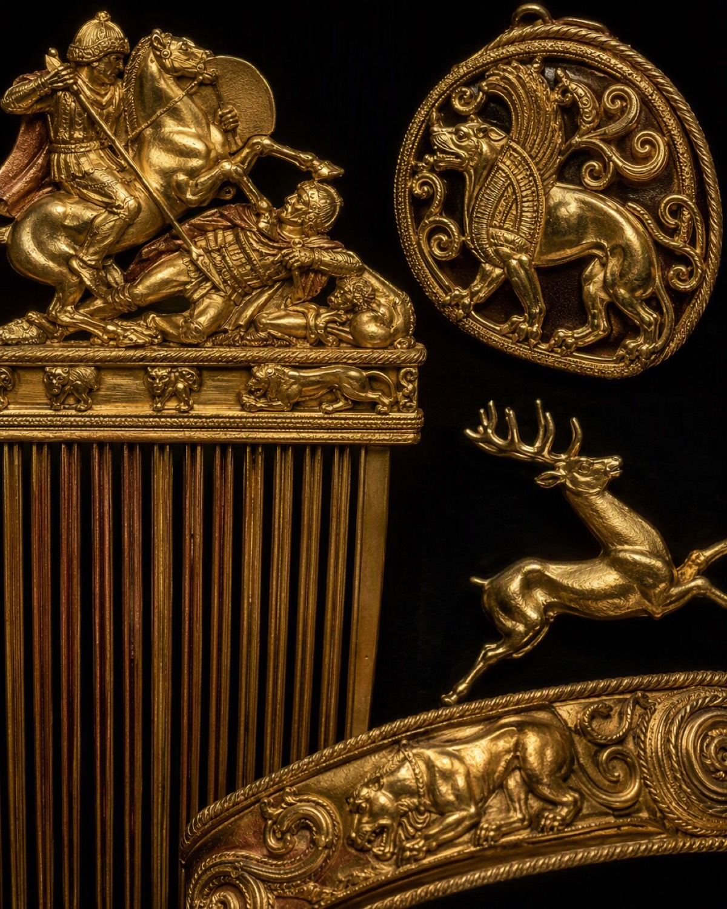
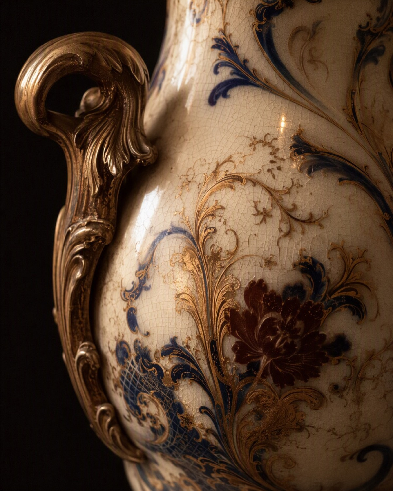
The Peacock Clock · London, c. 1780
James Cox, gilded bronze & automata
Folio I · the bird winds itself at dusk;
the empire, once, did not.
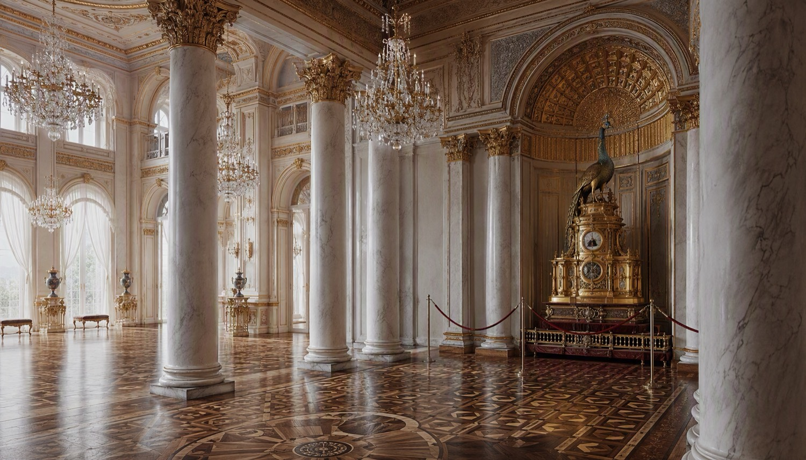
The Pavilion Hall, where the Peacock Clock keeps its silence between hours.Folio II · The Invitation
A museum that was
first a palace, then
an empire’s wardrobe.
There is a building on the Neva that was designed to outshine winter itself. Rastrelli raised it in the 1750s — mint-green, white, gold, baroque to the point of insolence — and Catherine the Great filled it so completely that her own apartments shrank to make room for pictures.
This issue is not a guidebook. It is a reading of the Hermitage through its objects: the automaton peacock that still turns at the hour, the steppe gold pulled from frozen burial mounds, the canvases that travelled from Parisian salons into revolution and snow.
Turn each spread as you would a folio. The pages move sideways here, the way collections do — across borders, centuries, and the long routes on the map further in.
1764Founded with 225 paintings bought in Berlin
c. 400halls across six linked buildings
3M+objects, from Scythian gold to Matisse
— The Editors
Folio III · Featured Collections
Six galleries,
six obsessions
A working museum collects like a magpie with a state budget. These are the veins of obsession that run through the building.
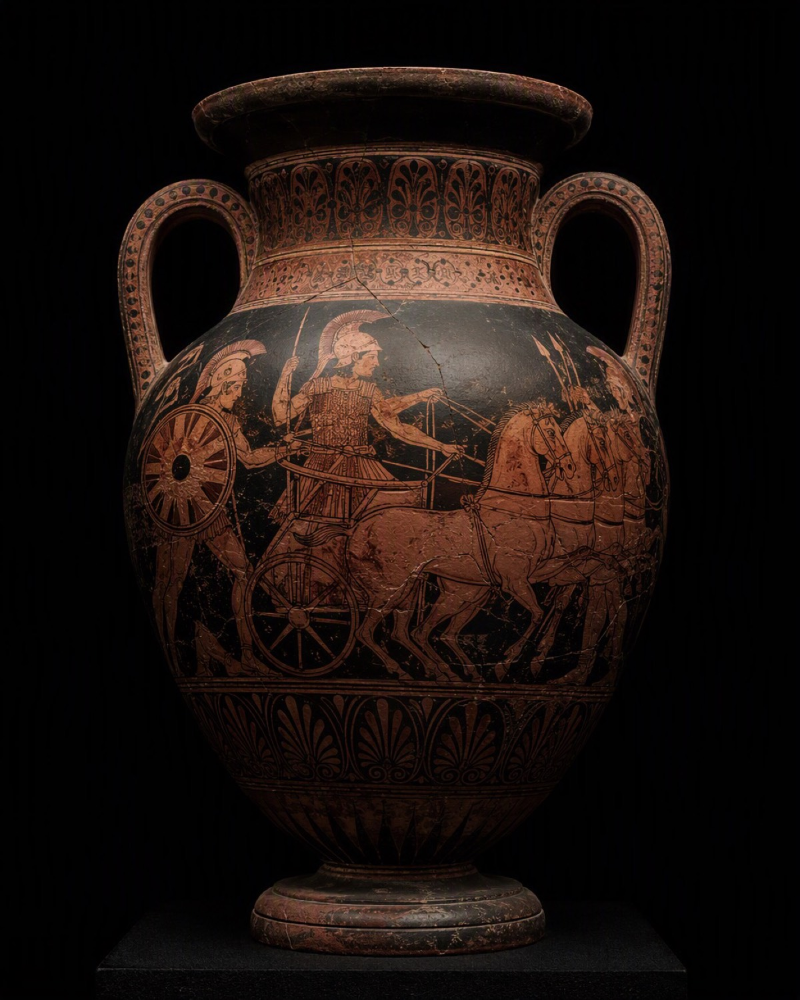
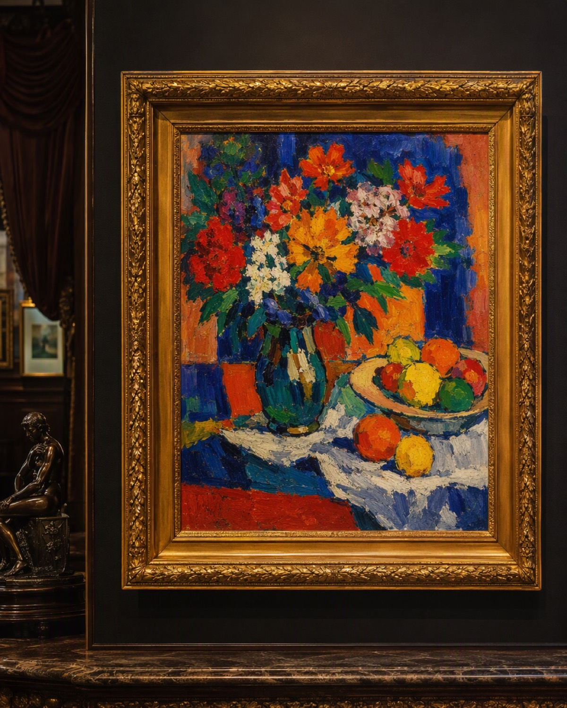
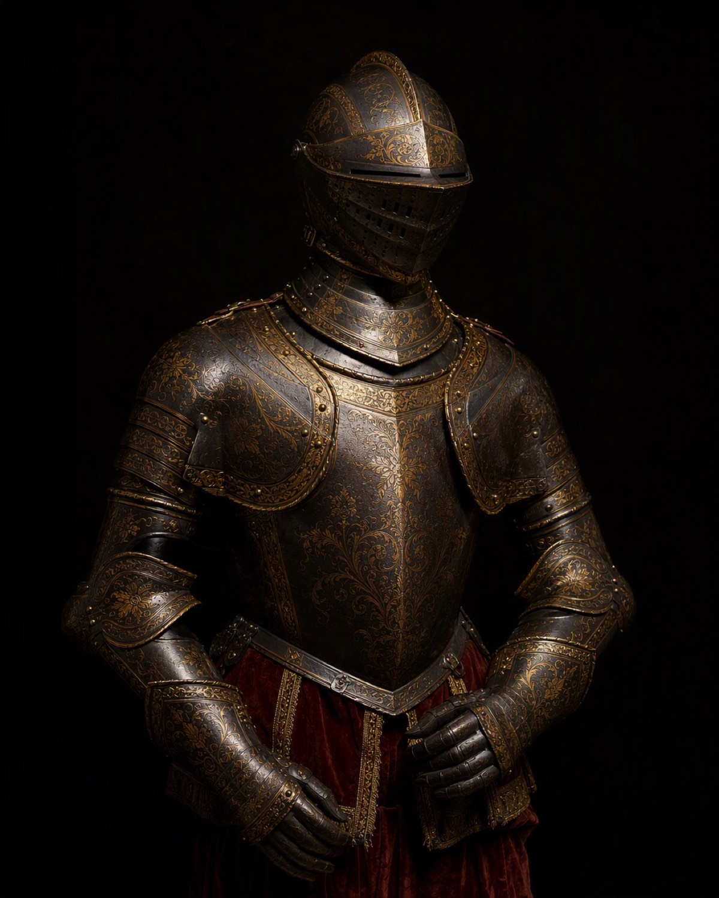
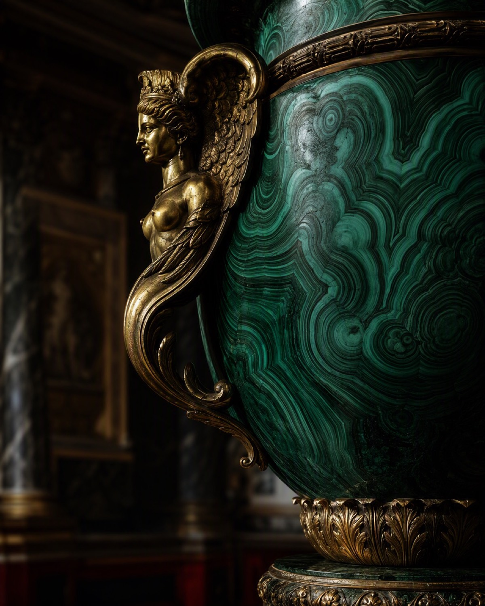
Folio IV · Curatorial Note
Collecting is a form of statecraft
In 1764 Catherine bought a Berlin merchant’s entire picture cabinet — 225 canvases, sight unseen — and stored them in palace rooms the court nicknamed l’Ermitage: the hermitage. The museum began, quite literally, as one woman’s refusal to be seen reading alone.
Every great holding here arrived with an argument attached. The antiquities justified an empire’s claim to Greek inheritance; the Old Masters announced that Russia could judge Europe better than Europe judged Russia; the Impressionists, seized and re-hung after 1917, became an accidental avant-garde museum decades before Paris built one.
“A palace collects to impress. A museum collects to remember. The Hermitage had the misfortune and the glory of being both.”
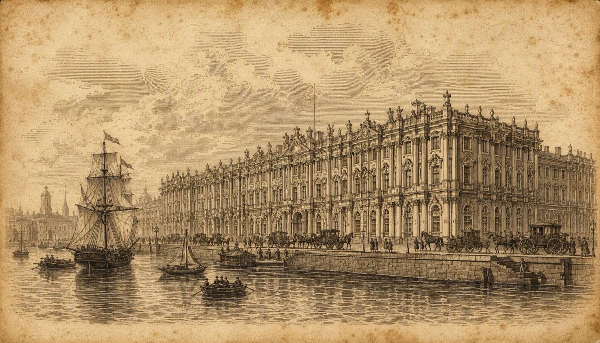
Folio V · The Long Ledger
Two hundred and sixty years, abridged
1754
Rastrelli begins the Winter Palace; baroque raised to the scale of an empire.
1764
Catherine acquires 225 paintings from Berlin. The hermitage begins as a private cabinet.
1852
The Imperial Hermitage opens its doors to the public for the first time.
1917
Revolution. The palace is nationalised; private collections are folded into the state’s.
1941–44
The siege. A million objects travel east to Sverdlovsk; the building stays and is shelled.
Today
Three million objects, six buildings, and a peacock that still turns on the hour.
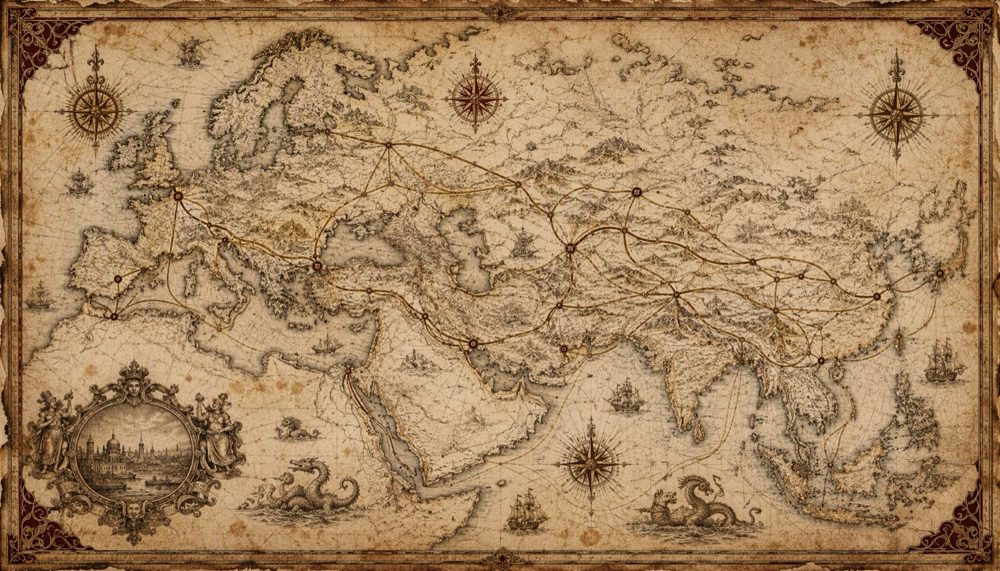
Folio VI · Routes & Provenance
Everything here travelled.
The lines show how.
London → the Neva
Mechanic’s gold: James Cox’s automata, built for export, bought by a prince for an empress.
Berlin → the Neva
The founding cargo, 1764: a merchant’s picture cabinet purchased whole, unseen.
Paris → the Neva
Shchukin’s Matisses and Morozov’s Cézannes — collected privately, kept publicly by revolution.
Rome & Athens → the Neva
Cameos, marbles and red-figure clay, bought from Italian cabinets and excavations alike.
The Steppe → the Neva
Barrow gold unearthed from Siberia to the Black Sea, carried west in tsarist expeditions’ crates.
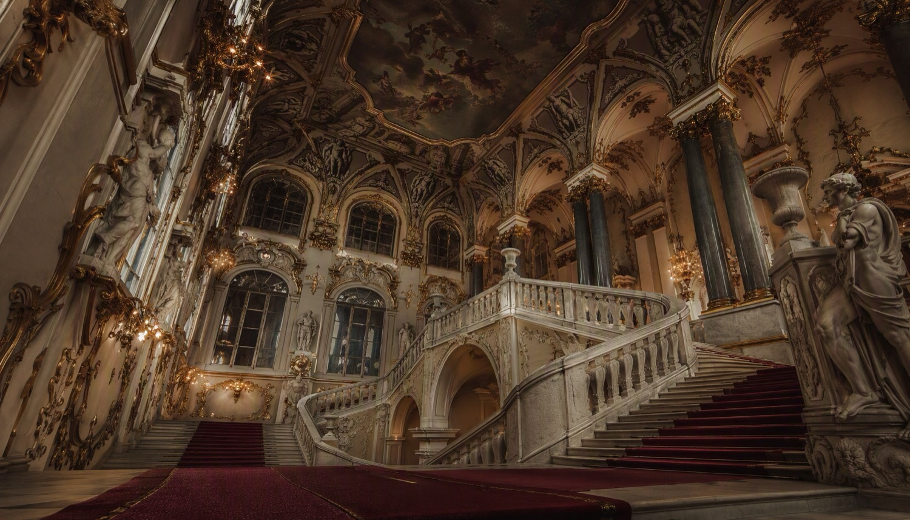
Folio VII · The Last Spread
The next page
is the staircase.
This issue ends where every visit begins: at the foot of the Jordan Staircase, gilded, marble, and slightly absurd in the best possible way.
Hermitage Review · Issue No. I · The Winter Palace Issue
Editorial atlas · plates AI-rendered in the museum’s palette of ink, bronze, oxblood & parchment
❧ Finis ❧